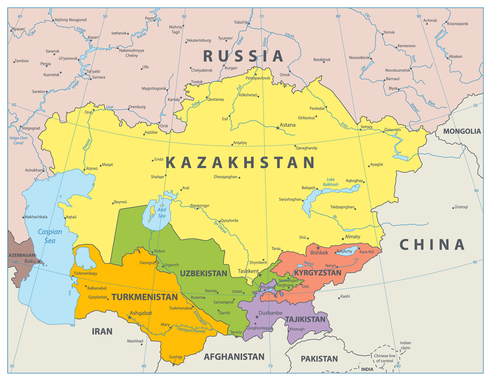

Is "Surplus Land" Really Surplus?
Presenting Russian Imperial Land Surveys
on the Kazakh Steppe in the Early Twentieth Century

Kazakhstan

Project Overview
This project reconstructs how Russian imperial surveyors transformed Kazakh pastoral landscapes into “surplus land,” and asks what this process reveals about the lasting misunderstanding of nomadic land use.
A Rare Large-Scale Survey
This project examines a large-scale Russian imperial survey of Kazakh pastoral communities in the early twentieth century. It was likely the first—and perhaps the last—investigation of this scale conducted among Kazakh communities before later political transformations reshaped the region.
Empire, Migration, and Land
The survey emerged from the pressures of Russian imperial expansion and peasant migration. After the emancipation of Russian serfs and the expansion of transportation networks such as the Siberian Railway, the Kazakh steppe became an important target for agricultural settlement.
Agriculture Meets Pastoralism
The survey was not only a technical instrument of colonial land appropriation. It also recorded a deeper encounter between sedentary agriculture and mobile pastoralism, revealing how imperial officials misunderstood Kazakh land use.
Why It Matters
Although this encounter took place more than a century ago, misunderstandings of nomadic land use continue today. By reconstructing how imperial officials measured and categorized Kazakh pastoral space, this project shows why the differences between agricultural and pastoral systems still matter for understanding nomadic societies.
In this sense, the project contributes to colonial historiography by showing how imperial knowledge, agricultural expansion, and pastoral land use came into conflict on the Kazakh steppe.